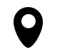

Creator of timeless logos that people love, Gal Shir is an independent designer based in Tel Aviv, helping young brands define their visual identity
Designing a powerful logo that sets the foundation for years
My logo design process is straightforward and usually takes two weeks. I charge an upfront payment of 25% and you only pay the remaining 75% if you're happy with the result.
Read moreMeeting
My process starts with a single kickoff meeting over Zoom or coffee in Tel Aviv. We chat about your brand vision, strategy, audience, and your unique offering.
Design
I conceptualize, design, and finalize one single direction for the logo. The design process is done solely on my end and you only see the final result.
Presentation
I send a complete presentation showcasing the logo alongside guidelines for a color system, fonts, and examples for different implementations.
Delivery
You receive the logo files. A unique logo that marks the most fundamental step in defining your brand identity and consists of custom shapes and letters designed from scratch.
I love being there, at the most fundamental moment when young brands get to define their visual identity.
Gal helps innovative startups to define their unique visual identities. Designing custom, unique, and powerful logos, Gal provides a fundamental asset for young brands that haven't set their visual footprint yet, or a makeover for established brands looking for a fresh rebrand.
Gal started his creative career as a designer, illustrator, and art director, working with several design studios and startups in Tel Aviv. Being on the founding team of Lemonade (2016 to 2019), Gal created and developed the iconic brand and led the implementation of the visual identity through the product, marketing, and beyond.
Over the last 15 years, Gal has been working in the spaces of design, art, entrepreneurship, illustration, product, and marketing. His work has gained massive exposure on social media, making him an influential person in the field. One of his major projects, Color Hunt, has become a leading resource for designers and artists with over 1 million monthly users.

hi@gal.sh
I'm currently taking logo design projects only. Drop me an email and I'll get back to you as soon as I can. I'd be happy to chat, learn about your brand, and see how I can help.
Tel Aviv